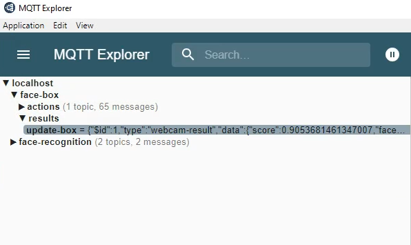

Architektur¶
Im Folgendem soll ein kurzer Einblick über die Architektur gegeben werden. Die erste Schnittstelle ist der MQTT Broker. An bestimmten topics lauschen die Dienste auf eingehende Anfragen. MinIO wird als File Storage für unsere Bilder benutzt. Diese sind Service-übergreifend, sodass jeder Service auf diese Dateien zugreifen kann. Alle Dienste werden über Docker Compose orchestriert, welches aber auch durch Docker Swarm einfach ersetzt werden kann. Unser Technologie Stack besteht aus:
Mqttjs
Nodejs
MinIO
Docker
face-api.js
openCV
Python

Workflow¶
Das Projekt wurde so aufgesetzt, dass alle Services unabhängig voneinander benutzt werden kann. Der Usecase aus Sicht der Nutzer wird in dem Kapitel Demo - Usecase erläutert.
Das Frontend schickt eine Recognition-Anfrage über MQTT an den Broker. Darin ist eine Request-ID und der Name der zu erkennenden Bilddatei enthalten.
Die Backend-Services lauchen auf eine Nachricht über eine bestimmte Topic und bearbeiten diese Anfrage dann intern in ihrem System. Die genauen Topics sind in der Beschreibung der Services enthalten.
Bemerkung
Falls nötig, werden Bilder aus dem MinIO Storage genommen und zur weiteren Bearbeitung verwendet.
Das Backend schickt sein Recognition-Ergebnis zurück über den MQTT Broker.
Das Frontend empfängt das Ergebnis und visualiert dieses auf dem Dashboard.
Bemerkung
Falls der Nutzer erkannt wird, wird an dieser Stelle eine Anfrage an die Datenbank gemacht, um die personenbezogenen Daten zu extrahieren.
Sofern der Nutzer nicht erkannt wird, wird ein Formular bereitgestellt, worin der Nutzer sich registrieren lassen kann. Die Daten werden dann in der Datenbank abgespeichert und währenddessen wurden Bilder zur Wiedererkennung in das MinIO File System abgelegt.
Bemerkung
Der Nutzer ist nun in der Datenbank gespeichert und das Model wurde auf das Gesicht des Nutzers trainiert.
MQTT¶
MQTT wird benutzt, um die Kommunikationsschnittstelle in unserer Microservice-Architektur zu realisieren. Hierbei besitzt jeder service seinen eigenen namespace für Anfragen und Ergebnis. Das Format der Topics sieht folgendermaßen aus: <service-name>/actions/<feature> oder <service-name>/results/<feature>.
../actions/.. ist die Schnittstelle für Anfragen an den Service.
../results/.. ist die Schnittstelle für das Ergebnis der Anfrage.
Hier ist eine Abbildung eines MQTT Clients (MQTT Explorer), welches den Nachrichtenaustausch und die verwendeten Topics der Frontend- und Backend Services übersichtlich darstellen kann.
{kind=link}